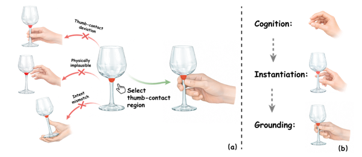
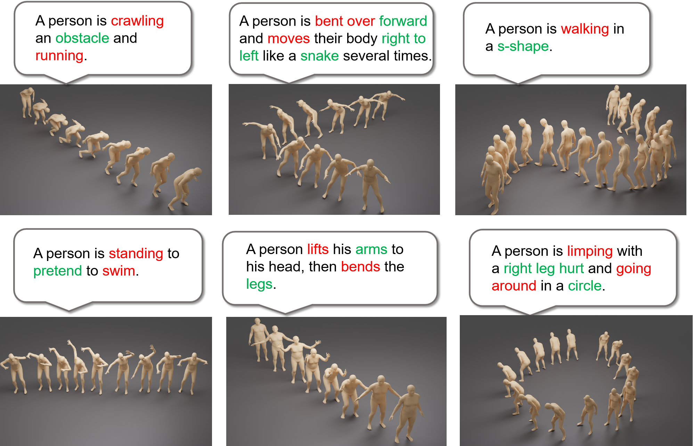
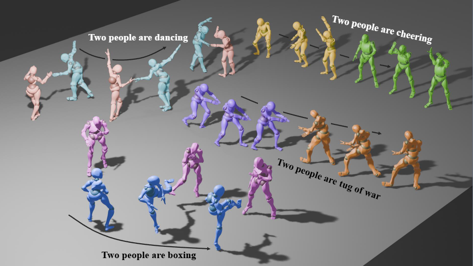
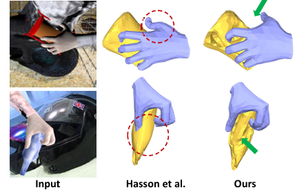
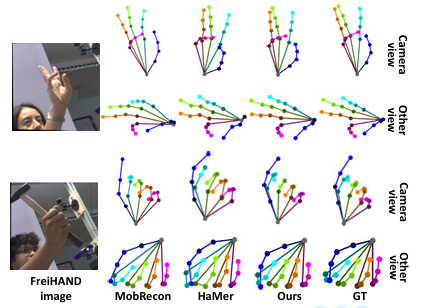

Yin Wang
Assistant Professor, Central University of Finance and Economics
Hi there! I'm Yin Wang (王崯 in Chinese). I am currently an Assistant Professor at the Institute of Artificial Intelligence, Central University of Finance and Economics. My research interests lie in Generative AI for Digital Humans and Character Animation. I have published several papers in top-tier venues, including IJCV, TVCG, SCIS, ICCV, IEEE VR, and has been recognized with Best Paper Awards at IEEE VR 2026 and ESI Highly Cited Paper.
Before that, I received my Ph.D. degree from Beihang University (State Key Laboratory of Virtual Reality Technology and Systems), supervised by Prof. Xiaohui Liang. And I received my master's degree from Central China Normal University, supervised by Prof. Xinguo Yu.
[Collaboration]: I am open to academic collaborations. Please feel free to contact me if you are interested.[本科实习生]: 长期接收本科生进课题组进行科研训练，请有兴趣的同学附个人简历和自我介绍发送至邮件联系。
Latest News
- Jun. 2026 Our paper TaxoGrasp has been accepted by ECCV 2026.
- Jun. 2026 I will serve as an Area Chair for Pacific Graphics (PG) 2026.
- May. 2026 I have successfully defended my PhD thesis.
- Mar. 2026 Our paper Dyn-HSI received the Best Paper Award at IEEE VR 2026.
- Feb. 2026 Our paper MP-HOI has been accepted by Science China Information Sciences (SCIS).
- Jan. 2026 Our paper Dyn-HSI has been accepted by IEEE VR 2026, and recommended for publication in TVCG.
- Nov. 2025 Our paper Fg-T2M++ was selected as an ESI Highly Cited Paper.
- Oct. 2025 Our paper FineDual has been accepted by Science China Information Sciences (SCIS).
- Oct. 2025 Our paper MOST has been accepted by IEEE Transactions on Visualization and Computer Graphics (TVCG).
Publications
[*] indicates equal contribution, [†] denotes corresponding author.
Selected Publications




Highlight Preprint

Experience
From Jun. 2026 to Now
Assistant Professor
Ph.D., from Sep. 2022 to Jun. 2026
Major in Computer Science. Supervised by Prof. Xiaohui Liang (梁晓辉 教授).
M.E., from Sep. 2020 to Jun. 2022
Major in Computer Science. Supervised by Prof. Xinguo Yu (余新国 教授), Rank: 3/80.
B.E., from Sep. 2016 to Jun. 2020
Major in Digital Media Technology. Rank: 5/50.
Honors and Awards
- May. 2026 Beijing Outstanding Graduate Award
- Mar. 2026 IEEE VR 2026 Best Paper Award
- Dec. 2025 Ninebot Scholarship
- Oct. 2025 China National Scholarship
- Apr. 2025 Academic Excellence Foundation
- Jun. 2022 Outstanding Master's Thesis Award
- Jun. 2022 Outstanding Master's Graduate Award